빠르고 바닥까지 고르게 조리
- 예열이 필요 없는 그릴 히터로 빠르게 요리할 뿐 아니라, 전자레인지 출력을 열로 바꿔주는 그릴 플레이트(멀티 팬)로 조리물의 바닥 면까지 뒤집을 필요 없이 바삭하게 요리합니다.
멀티쿡 및 자동조리 프로그램은 연속 조리가 불가능 합니다. 음식물을 연속으로 조리하면 조리실 내부 온도가 높아져 조리 결과에 영향을 주기 때문입니다. 한번 조리가 끝나면 충분히 제품이 식은 후 사용해 주세요.
사용자 안전을 지키고 재산상의 손해를 막기 위한 내용입니다. 반드시 잘 읽고 제품을 올바르게 사용해 주세요.
※ 본 제품은 신체, 감각, 정신 능력이 결여되어 있거나 경험과 지식이 부족하여 감독이나 지시 없이는 안전하게 기기를 사용할 수 없는 사람(어린이 포함)이 사용하도록 만들어지지 않았습니다. 안전한 사용을 위하여, 어린이가 기기를 가지고 놀지 않도록 어린이를 감시하는 것이 좋습니다.
※ 본 제품은 외부의 타이머나 분리된 원격 조정 시스템에 의해 동작되도록 의도되지 않았습니다.
지키지 않았을 경우 사용자가 사망하거나 중상을 입을 수 있습니다.
지키지 않았을 경우 사용자가 부상을 당하거나 재산상의 손해를 입을 수 있습니다.
[중요 안전 사용설명서] 주의 깊게 읽고 나중에 참고할 경우를 대비해서 잘 보관해 주세요.
아래 사항을 지키지 않을 경우 감전, 상해, 화재, 고장, 폭발의 원인이 됩니다.
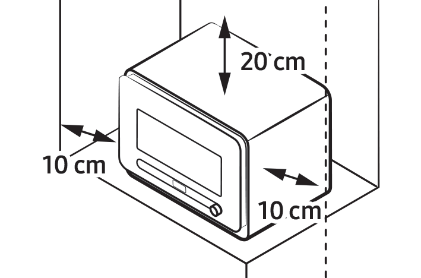
| 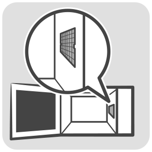 |
|
|---|
이러한 증상이 있습니까?
이럴 땐 사용 금지
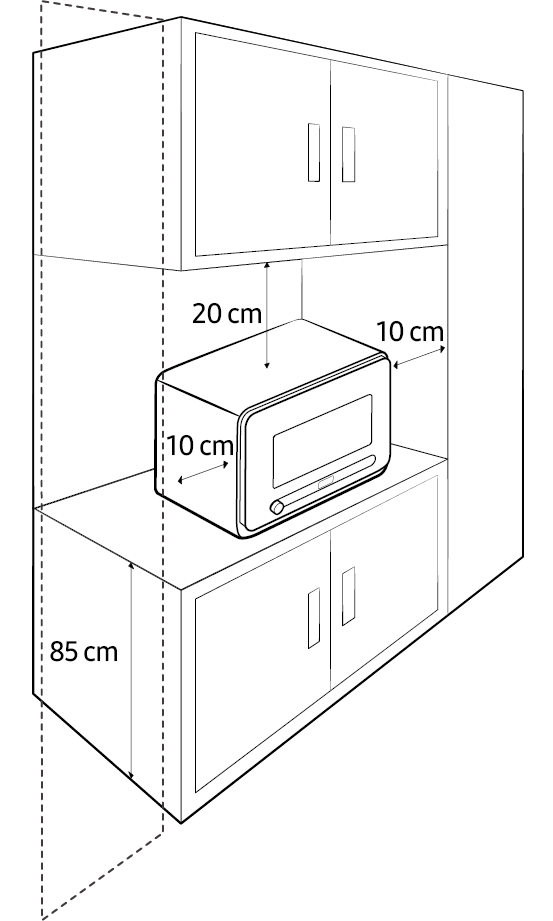
설치 전에 주의사항을 꼭 읽어주세요.
다른 전기제품 바로 옆에 설치할 경우 다른 전기제품의 주의 내용을 함께 읽어주세요.
다른 전기제품과 간격을 두고 설치하세요.
통풍이 잘 되는 평평하고 안정된 장소에 설치하세요.
내열온도가 낮은 바닥에 설치하지 마세요.
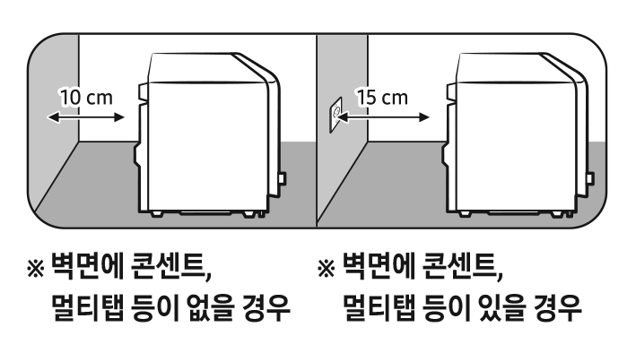
안전을 위해 반드시 접지단자가 있는 콘센트를 사용하세요.
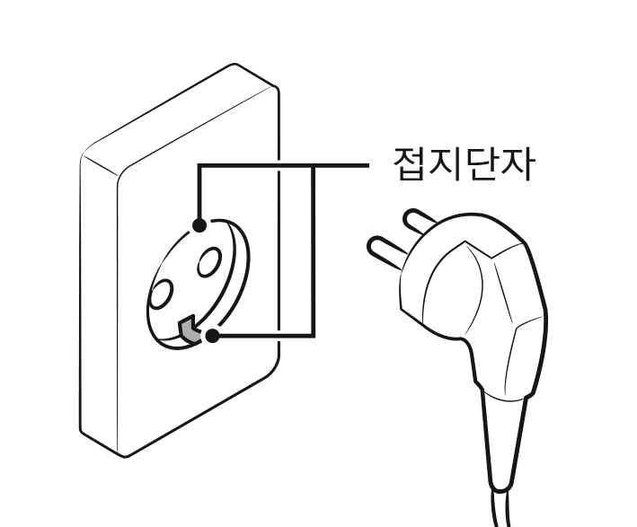
가스관, 수도관, 전화선 등에는 접지하지 마세요.
외부
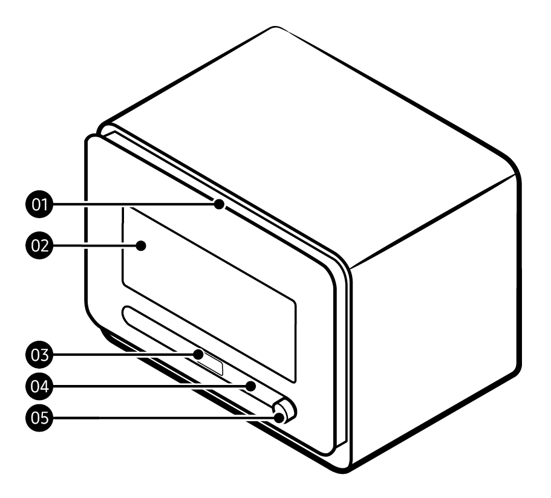
| 01 | 문 손잡이 (안쪽) |
|---|---|
| 02 | 도어 |
| 03 | 상태 표시 창 (디스플레이) |
| 04 | 뒤로가기 버튼 (취소) |
| 05 | 다이얼 노브 |
내부
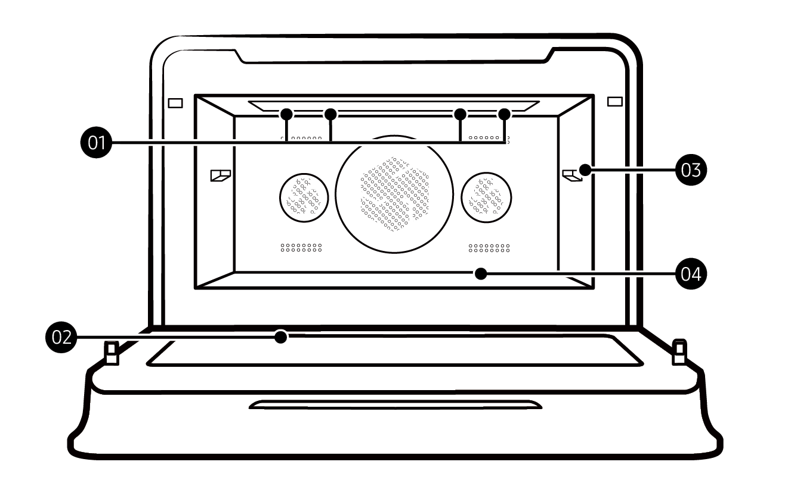
| 01 | 그릴 히터 (4 개) |
|---|---|
| 02 | 전면 글라스 |
| 03 | 그릴 플레이트(멀티 팬) 삽입부 |
| 04 | 조리실 내부 |
부속품
| 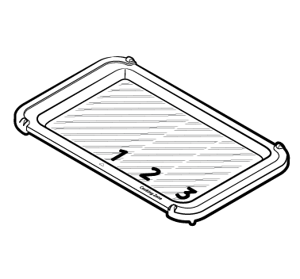 |
| 그릴 플레이트(멀티 팬) |
| 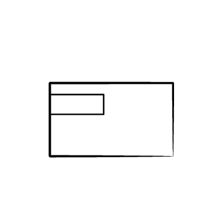 |
| SmartThings 연결 가이드 |
| 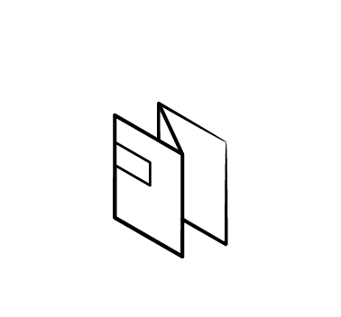 |
| 퀵 가이드 |
그릴 플레이트 (멀티 팬)
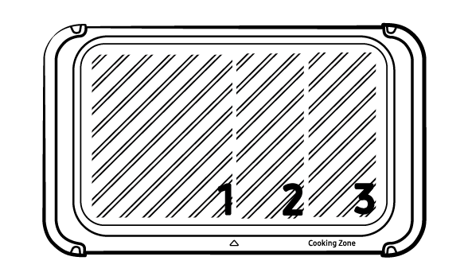
그릴 플레이트(멀티 팬)는 아래 표와 같은 모드를 사용 할 때, 조리물을 올려놓는 악세서리 입니다.
| 모드 | 사용 여부 | |
|---|---|---|
| 수동 모드 | 에어프라이 (냉동 피자, 냉동 치킨너겟, 고구마 등) |
O |
| 그릴 (베이컨, 햄, 치즈 녹이기 등) |
O | |
| 토스트 (식빵, 크루아상, 베이글 중 선택) |
O | |
| 전자레인지 | X | |
| 해동 | X | |
| 모드 | 사용 여부 | |
|---|---|---|
| 자동 모드 | 일반 요리 | △ * 일부 메뉴 |
| 셰프 요리 (모바일 앱에서 제공) |
O | |
| 간편식 요리 (모바일 앱에서 제공) |
△ * 일부 메뉴 |
|
| 밀키트 요리 (모바일 앱에서 제공) |
O | |
| 부속품 | 그릴 플레이트(멀티 팬) | |
|---|---|---|
| 자동 모드 | 모바일 앱 또는 제품 화면에서 안내에 따라 사용합니다. | |
| 수동 모드 (전자레인지, 해동 모드는 제외) |
||
| 사용방법 | 제품 전용 악세서리로, 각종 조리에 사용됩니다. 그릴 플레이트(멀티 팬)를 뒤집어서 넣거나 비스듬하게 넣으면 상해의 위험이 있으므로 반드시 정방향으로 삽입해 주세요. | |
그릴 플레이트 (멀티 팬)의 사용 위치는 2 가지 입니다. 모바일 또는 화면에서 설명하는 위치에 삽입해 주세요.
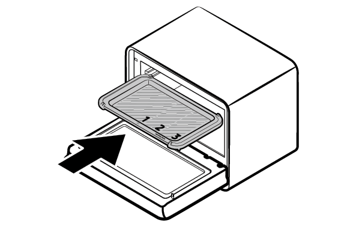
상단 : 그릴 플레이트(멀티 팬) 삽입부에 맞춰 끝까지 밀어 넣어주세요.
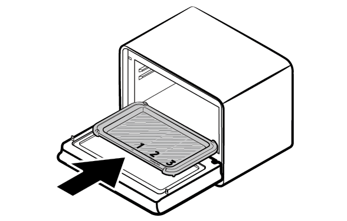
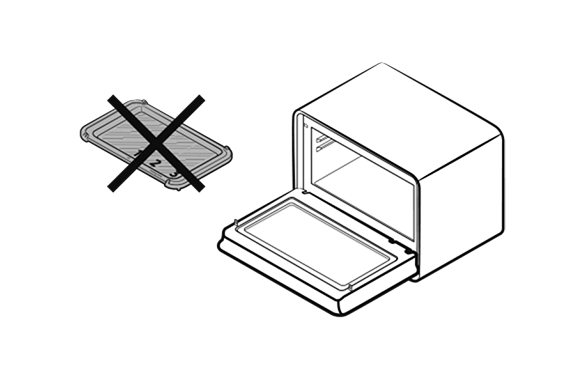
전자레인지 또는 해동 모드 사용 시, 그릴 플레이트(멀티 팬)를 빼고 사용하세요.
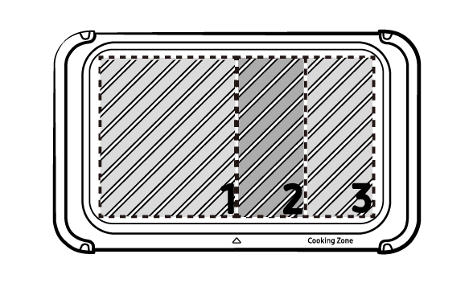
그릴 플레이트(멀티 팬)에 적혀 있는 숫자는 조리물을 올려놓는 영역을 의미합니다. 자세한 사항은 모바일 앱 또는 제품에서 표시되는 화면을 참고해 주세요.
자동조리 시 그릴 플레이트 (멀티 팬) 사용법
4존 모두 사용
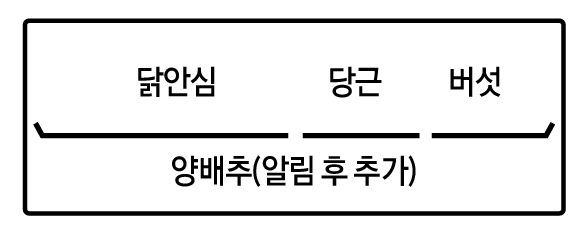
3존 사용 (하단 조리 X)
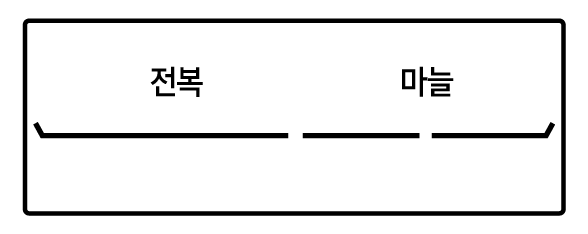
하단만 사용 (악세서리 사용)
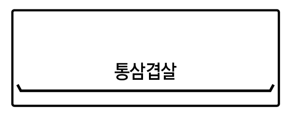
하단만 사용 (악세서리 사용 X)
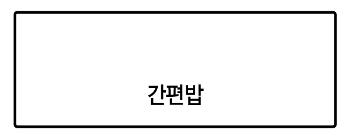
수동조리 시 그릴 플레이트 (멀티 팬) 사용법
에어프라이, 그릴 : 상단 + 플레이트
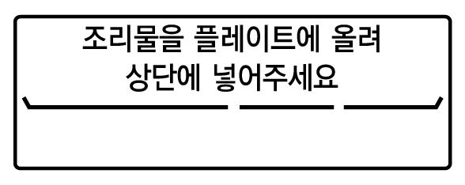
토스트 : 하단 + 플레이트
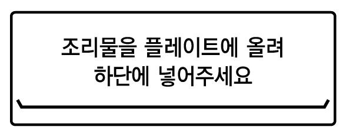
전자레인지, 해동 : 전자레인지 전용 용기/접시 사용
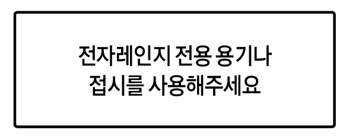
탈취 : 조리물 없이 시작 필요
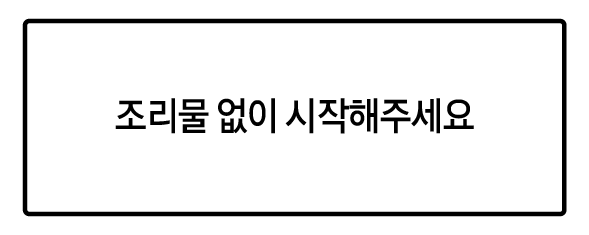
삼성 큐커는 한 끼 메뉴를 동시에 조리하는 신개념 조리기기 입니다. 그릴 플레이트(멀티 팬)를 상단에 삽입한 상태에서만 동시 조리가 가능하며, 2 가지 유형이 있습니다. 모바일 앱에서 추천하는 자동 요리에만 적용되어 있으며, 자세한 사항은 모바일 앱 레시피를 참고하세요.
좌우 멀티
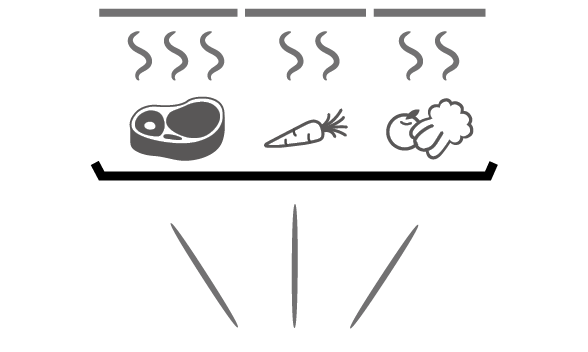
그릴 플레이트(멀티 팬)의 조리 영역별로 그릴 히터의 온도/시간을 각각 제어하는 동시 요리입니다. 종류가 다른 식자재 뿐 아니라 동일한 식자재라도 형태나 취향에 따라 최적의 조리 알고리즘을 구현합니다.
상하 멀티
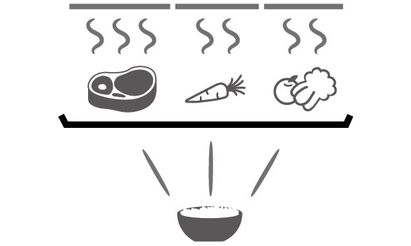
그릴 플레이트(멀티 팬) 위(상단)에는 그릴 히터를 하단에는 전자레인지 기능을 이용하는 동시 요리입니다. 상단 조리물의 그릴 효과를 최상으로 하기 위해서 일부 메뉴는 상단 조리를 먼저 시작하고 추가로 하단에 조리물을 넣도록 가이드 되어 있습니다.
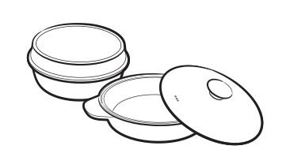
도자기류
| 에어프라이, 그릴, 토스트 | 전자레인지, 해동 |
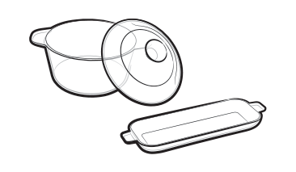
내열유리 그릇
| 에어프라이, 그릴, 토스트 | 전자레인지, 해동 |
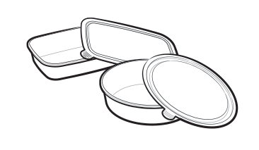
내열 플라스틱 그릇
| 에어프라이, 그릴, 토스트 | 전자레인지, 해동 |
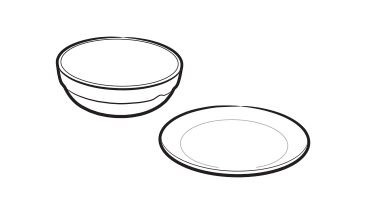
일반 플라스틱 그릇
| 에어프라이, 그릴, 토스트 | 전자레인지, 해동 |
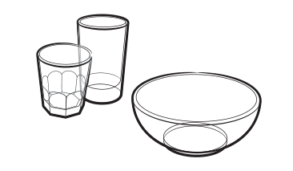
일반 유리그릇
| 에어프라이, 그릴, 토스트 | 전자레인지, 해동 |
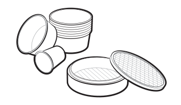
나무, 종이 그릇
| 에어프라이, 그릴, 토스트 | 전자레인지, 해동 |
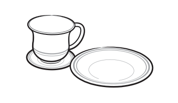
금선/은선 무늬 그릇
| 에어프라이, 그릴, 토스트 | 전자레인지, 해동 |
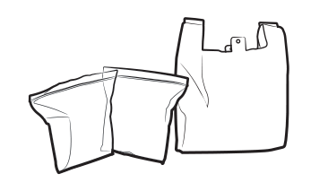
비닐봉지
| 에어프라이, 그릴, 토스트 | 전자레인지, 해동 |
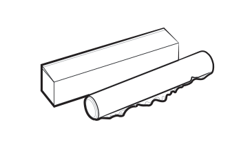
랩
| 에어프라이, 그릴, 토스트 | 전자레인지, 해동 |
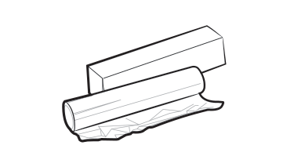
호일
| 에어프라이, 그릴, 토스트 | 전자레인지, 해동 |
|
사용할 수 있습니다. |
|
|
사용하지 마세요. (그릇의 변형이나 화재의 위험이 있습니다.) |
|
|
주의해서 사용하세요. (오랜 시간 조리 시에는 사용하지 마시고 사용 중 자주 확인하세요.) |
큐커에서 설정/작동 가능한 모드
수동 모드
| 에어프라이 | 설정 가능 범위 | 40 ~ 200 ℃ |
|---|---|---|
| 기본 설정온도 | 190 ℃ | |
| 최대 시간 | 60 분 | |
| 그릴과 전자레인지, 열풍의 복합 열원을 이용하여 빠르고 바삭하게 요리합니다. | ||
| 그릴 | 설정 가능 범위 | - |
| 기본 설정온도 | - | |
| 최대 시간 | 60 분 | |
| 상단 그릴을 이용하여 노릇하게 구워줍니다. | ||
| 토스트 | 설정 가능 범위 | 식빵, 크루아상, 베이글 |
| 기본 설정온도 | 식빵 | |
| 최대 시간 | 10 분 | |
식빵을 굽거나 냉장/냉동 상태의 크루아상, 베이글을 따뜻하게 데울 수 있습니다.
주의냉동빵 생지를 포함한 베이킹 기능은 지원하지 않습니다. |
||
| 전자레인지 | 설정 가능 범위 | 강(700 W), 중(450 W), 약(300 W) |
| 기본 설정온도 | 강 (700 W) | |
| 최대 시간 | 90 분 | |
| 전자파를 이용하여 요리를 하거나, 데우기를 합니다. 전자레인지 출력 설정은 제품의 설정에서 변경 가능합니다. | ||
| 해동 | 설정 가능 범위 | - |
| 기본 설정온도 | - | |
| 최대 시간 | 90 분 | |
| 전자파를 이용하여 냉동된 식품을 녹여줍니다. | ||
모바일 앱 추가 모드
(*조리 시작은 큐커에서 선택합니다.)
자동 모드
| 셰프 요리 | 삼성의 CLUB DE CHEF 전문 셰프가 추천한 메뉴로 자동으로 요리됩니다. |
|---|---|
| 밀키트 요리 | 밀키트 회사가 최적의 조리법으로 추천한 메뉴로 바코드를 스캔하면 자동으로 요리됩니다. |
| 간편식 요리 | 식품업체가 최적의 조리법으로 추천한 간편식품(HMR)으로 바코드를 스캔하면 자동으로 요리됩니다. |
| 일반 요리 | 간편한 일상 요리가 추천되어 있으며 메뉴를 선택하면 자동으로 요리가 됩니다. |
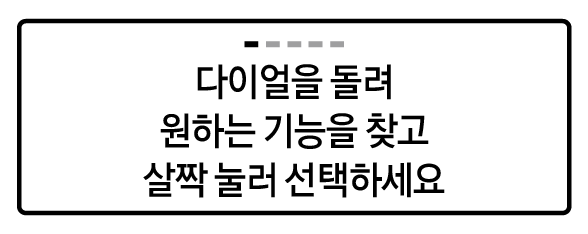
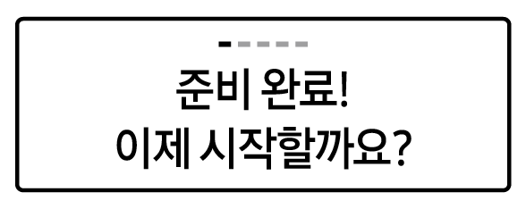
조리실 내부를 식혀주는 냉각기능입니다.
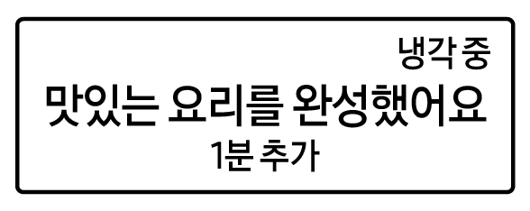
자동 냉각 기능은 따로 설정할 필요 없이 기본적으로 제공되는 기능입니다.
조리 완료 후 동작이 없을 시 절전모드로 전환됩니다.
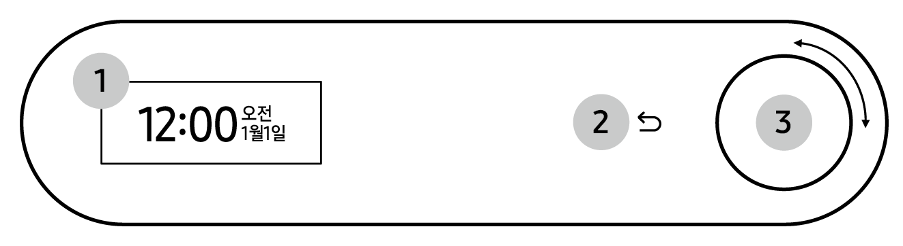
01 상태 표시 창
현재 시간이나 조리의 진행 상태를 표시합니다.
02 뒤로가기
전 단계로 돌아갑니다.
03 다이얼 노브
기능을 선택할 때 사용합니다. 왼쪽 또는 오른쪽으로 돌릴 수 있으며 다이얼을 누르면 선택 또는 시작됩니다.
기능 선택 다이얼
| 에어프라이 | 열풍으로 바삭하게 요리할 때 사용하며 온도와 시간을 선택합니다. |
|---|---|
| 그릴 | 표면을 노릇하게 요리할 때 사용하며 시간을 선택합니다. |
| 토스트 | 식빵을 바삭하게 굽거나 냉장/냉동 상태의 크루아상, 베이글을 따뜻하게 데울 때 사용하며 빵 종류와 시간을 선택합니다. |
| 전자레인지 | 간단히 음식물을 데울 때 사용하며 강/중/약과 시간을 선택합니다. |
| 해동 | 냉동된 식품을 녹일 때 사용하여 시간을 선택합니다. |
| 설정 | 전자레인지 출력, 내부 청소, 탈취, 잠금, 화면 자동 꺼짐, 현재 시간, 현재 날짜, 시간 표시 형식, 소리, Wi-Fi, 맞춤 최적화, 초기화 등을 설정할 수 있습니다. |
전자레인지 및 에어프라이 기능에서는 달걀, 삶은 달걀을 가열하면 폭발이나 파열의 위험이 있으므로 사용하지 마세요.
열풍으로 바삭 촉촉하게 조리하는 기능입니다.

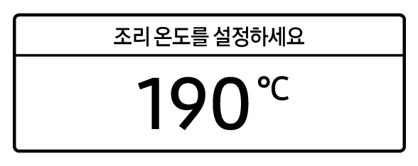
표면을 바짝 노릇하게 조리할 때 사용합니다.
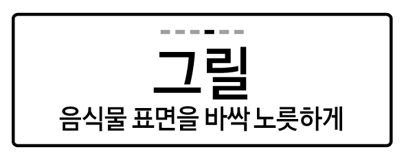
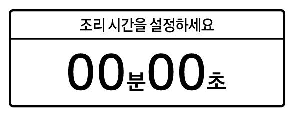
식빵을 굽거나 냉장/냉동 상태의 크루아상, 베이글을 따뜻하게 데울 수 있습니다.
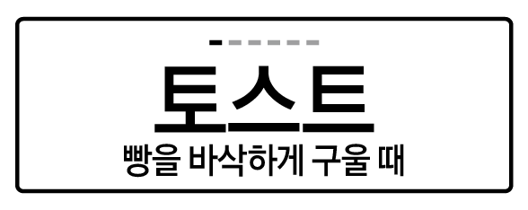

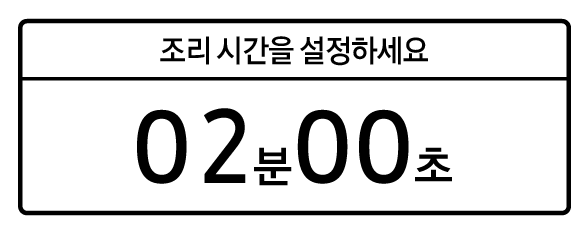
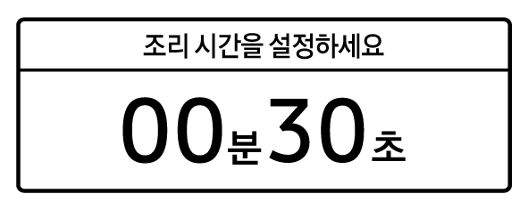
전자레인지 기능 사용 시 그릴 플레이트(멀티 팬)는 사용하지 마세요. 그릴 플레이트(멀티 팬)는 모바일 앱 또는 제품 화면에서 안내에 따라 사용합니다.
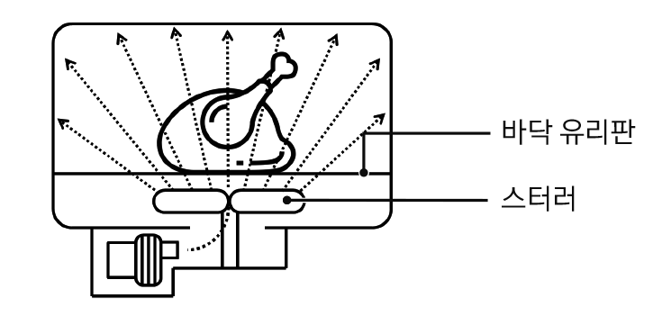
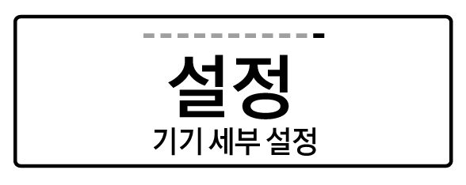
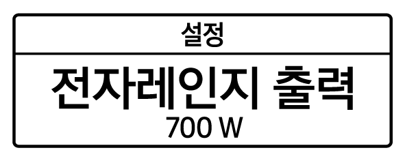
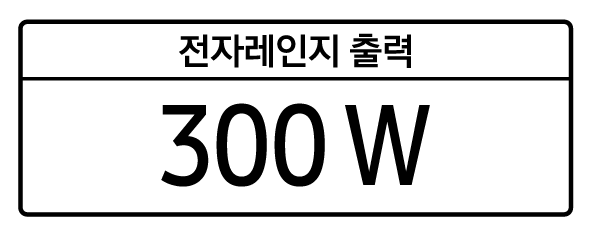
전자레인지 기능 사용 시 그릴 플레이트(멀티 팬)는 사용하지 마세요. 그릴 플레이트(멀티 팬)는 모바일 앱 또는 제품 화면에서 안내에 따라 사용합니다.
전자레인지 출력 설정은 재부팅 및 초기화 전까지 변경 세팅 값을 유지합니다.
| 출력 (W) | 사용방법 |
|---|---|
| 700 W | 밥/국/찌개 데우기, 물/음료 가열, 채소류 데치기 |
| 450 W | 죽/스프 데우기, 닭 가슴살 데우기, 남은 음식 데우기, 계란찜 조리 |
| 300 W | 떡 데우기, 버터/초콜릿 녹이기 |
조리가 끝나면 알림음이 울린 후 '조리 시간 더하기' 팝업이 출력되며, 조작이 없으면 대기 모드로 전환됩니다.
젖병을 소독할 때
냉동된 음식을 간편하게 해동할 수 있습니다. 해동 시에는 랩이나 비닐을 씌우지 마세요.
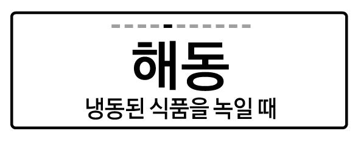
스팀 청소와 상부 그릴 청소를 통해 조리실 내부를 깨끗하게 유지할 수 있습니다.


내부 청소 시, 조리실 내부의 음식물과 그릴 플레이트를 제거하세요.


청소 시에는 뜨거운 물이나 스팀, 날카로운 부위에 부상을 입지 않도록 주의하세요.

내부 청소 시, 조리실 내부의 음식물과 그릴 플레이트를 제거하세요.

청소 직후에는 조리실이 뜨거울 수 있으니, 화상에 주의하세요.
청소 직후 조리실 바닥의 검은 찌꺼기는 상부 그릴 청소에 의해 떨어진 기름때입니다. 제품의 이상이 아닙니다.
조리 후 음식 냄새를 줄이는 데 사용하면 좋습니다.
화면에 대한 자동 꺼짐 시간을 설정할 수 있습니다.
항상 켜짐을 선택할 경우, 전력 사용량이 증가할 수 있습니다.
제품의 현재 시간, 날짜, 시간 표기 형식을 변경합니다.

제품의 날짜를 설정합니다.
시간 표시 형식을 12 시간 / 24 시간 으로 변경합니다.
제품의 사운드를 키고 끌 수 있습니다.
Wi-Fi 기능을 키고 끌 수 있습니다.
해당 기능을 끄면 SmartThings 기능과 모바일 앱 연동이 동작하지 않습니다.
자주 사용하는 조리 모드와 옵션을 알아서 맞추는 기능입니다.

제품 초기화를 진행합니다. Wi-Fi 설정 및 SmartThings 연결, 제품 설정이 초기화 됩니다
자동 연결
SmartThings 연결 방법에 대해서는 별도 제공되는 연결 가이드를 참고해 주세요.
수동 연결
모바일 기기에 등록한 적이 있다면 '연결 중…'으로 넘어가며, 연결되지 않았거나 등록된 계정을 리셋한 경우에는 재등록 과정이 필요합니다.
SET Wi-Fi 켜짐 여부 및 AP 연결 여부는 아래 표를 참고해 주세요.
Wi-Fi 켜짐
| AP 연결 | 상태 표시 창 |
|---|---|
| AP가 연결된 상태에서, 큐커 본체의 Wi-Fi가 활성화 되어있는 상태입니다. | |
| AP가 연결되지 않은 상태에서, 큐커 본체의 Wi-Fi만 활성화 되어있는 상태입니다. |
Wi-Fi 꺼짐
| AP 연결 | 상태 표시 창 |
|---|---|
| AP가 연결되지 않았고, 큐커 본체의 Wi-Fi 또한 비활성화 되어있는 상태입니다. |
해당 기능을 끄면 SmartThings 기능과 모바일 앱 연동이 동작하지 않습니다.
모바일 앱을 사용하여 다양한 레시피를 조리할 수 있습니다.
자세한 사항은 모바일 앱 내부 설명을 참고해 주세요.
머그컵에 물 반 컵을 채워 조리실 바닥에 놓은 후, 설정에서 다이얼을 돌려 내부 청소(스팀 청소)를 선택합니다. 청소 완료 후, 마른 천으로 조리실 내부를 닦아주세요. 청소 시에는 뜨거운 물이나 스팀, 날카로운 부위에 부상을 입지 않도록 주의하세요.
스팀 청소 완료 후 머그컵을 제거한 뒤, 다이얼을 눌러 상부 그릴 청소를 선택합니다. 청소 완료 후, 마른 천으로 조리실 내부를 닦아주세요. 청소 직후에는 조리실이 뜨거울 수 있으니, 화상에 주의하세요.
공통/그릴/큐커에 문제가 발생하면 아래 제시된 해결 방법을 시도해 보세요. 불필요한 서비스 요청에 따른 시간과 불편을 줄일 수 있습니다.
공통
버튼이 잘 눌러지지 않습니다.
시간 표시가 안됩니다.
작동이 안됩니다.
작동 중에 동작을 멈춥니다.
작동 중에 전원이 꺼집니다.
작동 중 펑 소리가 나면서 작동을 안합니다.
작동 시 전자레인지 외관이 너무 뜨거워집니다.
문이 잘 안 열립니다.
전자레인지 가열이 약하고 느립니다.
해동 기능이 안됩니다.
실내등이 약하거나 켜지지 않습니다.
조리 중 알림 소리가 납니다.
제품의 균형이 안 맞습니다.
조리 중에 불꽃이 생깁니다.
전원을 넣으면 바로 작동합니다.
제품에서 전기가 흐릅니다.
물방울이 떨어져요.
문 틈새로 증기가 새요.
조리실에 물이 남아요.
실내등의 밝기가 일정하지 않아요.
조리가 끝났는데 냉각팬이 동작해요.
제품에서 '딸깍, 따르륵, 딱딱, 찌르륵'거리는 소리가 납니다.
조리가 끝났는데 알림음이 들려요.
차단기가 내려가요.
동작 시 연기 또는 타는 냄새가 납니다.
그릴 가열이 안됩니다.
예열 시 연기가 납니다.
제품 동작 시 탄 냄새, 플라스틱 냄새가 납니다.
조리실 내부에 악취가 납니다.
요리가 잘 되지 않습니다.
전자레인지, 토스트, 에어프라이, 해동 등 실제 기능이 동작하지 않으며, 화면 왼쪽 상단에 'D'가 표시되어 있습니다.
C-20
C-21
C-F0
C-F1
C-d0
C-A1
C-F2
| 모델명 | |
|---|---|
| MO22A7797** | |
| 소비전력 | 전자레인지 : 1,050 W 그 릴 : 1,500 W 에어프라이 : 2,550 W |
| 고주파출력 | 700 W |
| 정격전압 | 220 V ~ 60 Hz |
| 발진주파수 | 2,450 MHz |
| 제품중량 (본체) / 총 무게 (포장포함) |
23.3 kg / 26.8 kg |
| 제품용량 | 22 L |
| 치 수 (가로 X 높이 X 깊이) |
외관 (다이얼 포함) 500 X 385.3 X 415.8 mm |
| 조리실 403.1 X 198.6 X 270.2 mm |
|
이 기기는 가정용(B급) 전자파 적합 기기로써 주로 가정에서 사용하는 것을 목적으로 하며, 모든 지역에서 사용할 수 있습니다.
고객께서 삼성전자 제품을 새로 구입하고 폐 제품을 버리고자 하는 경우, 새 제품 배달 설치 시 제조자 구분 없이 설치기사가 모든 제품을 무료로 수거해 드립니다.
Tip!
직접 운반 (Hand Carry)이 가능한 소형 폐 제품은 제품 구입 및 수리와 상관없이 가까운 삼성전자 대리점 또는 서비스센터로 가져오시면 무료로 처리해 드립니다.
신규 제품 구입 없이 기존에 사용하던 제품을 버리고자 하는 경우, 관할 주민자치센터에 연락하시어 처리하시면 됩니다.